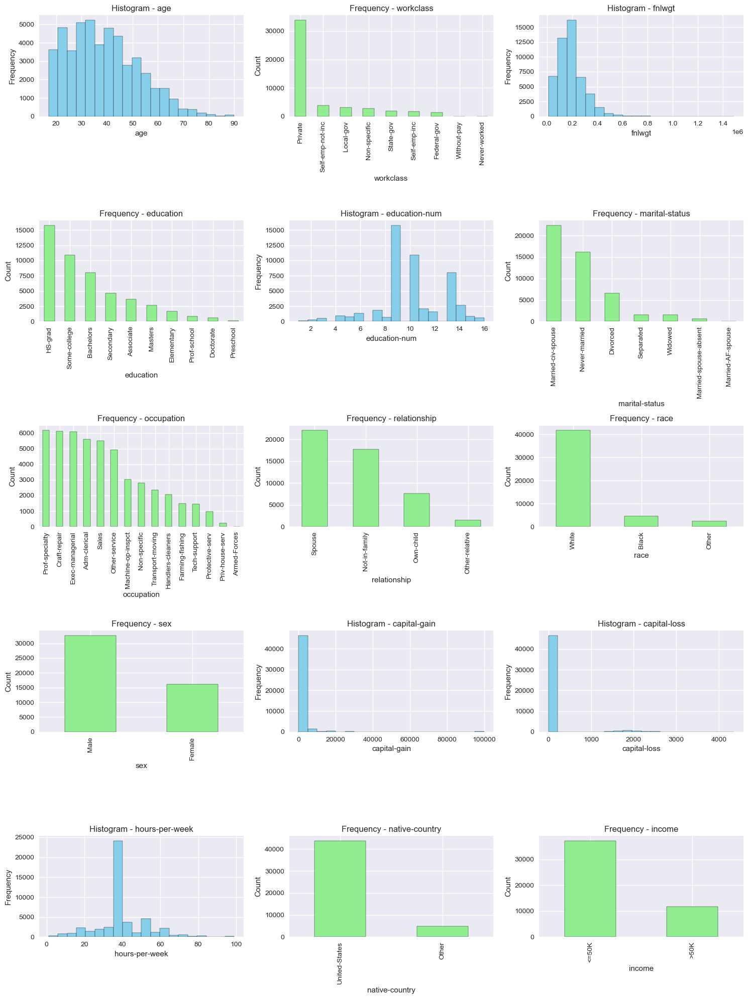

Exploratory Data Analysis (EDA)
Dataset Overview
- Source: UCI Adult Dataset
- Features: age, workclass, fnlwgt, education, education-num, marital-status, occupation, relationship, race, sex, capital-gain, capital-loss, hours-per-week, native-country, income
Sample Data
| age | workclass | fnlwgt | education | education-num |
marital-status | occupation | relationship | race |
sex | capital-gain | capital-loss | hours-per-week |
native-country | income |
| 39 | State-gov | 77516 | Bachelors | 13 | Never-married | Adm-clerical | Not-in-family | White | Male | 2174 | 0 | 40 | United-States | <=50K |
| 50 | Self-emp-not-inc | 83311 | Bachelors | 13 | Married-civ-spouse | Exec-managerial | Husband | White | Male | 0 | 0 | 13 | United-States | <=50K |
| 38 | Private | 215646 | HS-grad | 9 | Divorced | Handlers-cleaners | Not-in-family | White | Male | 0 | 0 | 40 | United-States | <=50K |
Unique Values per Column
| Column | Unique Values |
|---|
| age | 74 |
| workclass | 9 |
| fnlwgt | 28523 |
| education | 16 |
| education-num | 16 |
| marital-status | 7 |
| occupation | 15 |
| relationship | 6 |
| race | 5 |
| sex | 2 |
| capital-gain | 119 |
| capital-loss | 92 |
| hours-per-week | 94 |
| native-country | 42 |
| income | 2 |
Initial Observations
- Age ranges from 17 to 90 years old.
- Missing values and '?' found in workclass, occupation, and native-country.
- 16 education levels, 15 occupations, 5 races, 2 sexes.
Data Cleaning
- 29 duplicate records were removed.
- Missing values in workclass, occupation, and native-country replaced with "Non-specific".
- Rare categories in race, relationship, and native-country were grouped to reduce dimensionality.
- The target variable income was standardized and encoded as binary.
Transformations
- Education: Grouped into Elementary, Secondary, Associate, etc.
- Race: Rare categories grouped as "Other".
- Relationship: "Husband" and "Wife" grouped as "Spouse".
- Native-country: All except "United-States" grouped as "Other".
Visualizations
Histograms for numeric features and bar plots for categorical features were generated. Example:

Preprocessing
- Numeric features: median imputation.
- Skewed features: log-transform and standardization.
- Categorical features: mode imputation and OneHotEncoding.
Processed Data
- The processed dataset is saved at
data/processed/adult.data.
- Full notebook: EDA.ipynb